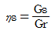
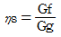
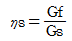
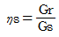

철도차량정비기능장 (2010-07-11 기출문제)
1과목: 임의 구분
1. 관리도에서 점이 관리한계 내에 있으나 중심선 한쪽에 연속해서 나타나는 점의 배열현상을 무엇이라 하는가?
- 연
- 경향
- 산포
- 주기
(정답률: 60%)

2. 로트의 크기 30, 부적합품률이 10%인 로트에서 시료의 크기를 5로 하여 랜덤 샘플링할 때, 시료 중 부적합 품수가 1개 이상일 확률은 약 얼마인가? (단, 초기하분포를 이용하여 계산한다.)
- 0.3695
- 0.4335
- 0.5665
- 0.63⑤
(정답률: 67%)
3. 다음 중 브레인스토밍(Brainstorming)과 가장 관계가 깊은 것은?
- 파레토도
- 히스토그램
- 회귀분석
- 특성요인도
(정답률: 65%)
4. 작업개선을 위한 공정분석에 포함되지 않는 것은?
- 제품 공정분석
- 사무 공정분석
- 직장 공정분석
- 작업자 공정분석
(정답률: 73%)
5. 로트의 크기가 시료의 크기에 비해 10배 이상 클 때, 시료의 크기와 합격판정개수를 일정하게 하고 로트의 크기를 증가시키면 검사특성곡선의 모양 변화에 대한 설명으로 가장 적절한 것은?
- 무한대로 커진다.
- 거의 변화하지 않는다.
- 검사특성곡선의 기울기가 완만해 진다.
- 검사특성곡선의 기울기 경사가 급해진다.
(정답률: 63%)
6. 과거의 자료를 수리적으로 분석하여 일정한 경향을 도출한 후 가ᄁᆞ운 장래의 매출액, 생산량 등을 예측하는 방법을 무엇이라 하는가?
- 델파이법
- 전문가패널법
- 시장조사법
- 시계열분석법
(정답률: 69%)
7. 디젤전기기관차에서 기관의 회전수가 800rpm, 극수가 16일 때 주파수는 몇 Hz인가?
- 156.8
- 116.8
- 106.7
- 206.6
(정답률: 65%)
8. 전기동력차의 연동장치에 해당되지 않는 것은?
- 전자 연동장치
- 후부 연동장치
- 전기 연동장치
- 기계 연동장치
(정답률: 70%)
9. 철도차량전기에서 S,C,R이란 무엇인가?
- 실리콘
- N형 반도체
- P형 반도체
- 실리콘 제어정류 소자
(정답률: 80%)
10. SIV 보호기능으로 고장방지 및 외부요인에 의한 이상현상이 아닌 것은?
- 입력 저전압
- 입력 과전압
- 출력 과전류
- 교류출력 과전압
(정답률: 64%)
11. 전기동력차에서 TCMS시스템과 관련이 없는 것은?
- 차량에 장치된 정보의 집중화를 이룬다.
- 직렬통신선으로 연결된 차량에 대해 주요장치를 제어한다.
- 열차정보의 관리시스템으로 역할 한다.
- 차량관리원에게 운전지원을 해준다.
(정답률: 78%)
12. 철도차량 동력차에서 사용하고 있는 제어 전원 중 사용하지 않는 전압은?
- DC 24 V
- AC 31 V
- DC 64 V
- AC 100 V
(정답률: 71%)
13. 전기차에 사용하는 VVVF 인버터의 전압과 주파수 관계를 설명한 것으로 틀린 것은?
- 전원주파수(f)만을 변화시키면 속도는 상승하고 토크는 1/f2에 비례하여 감소한다.
- 전동차의 역행제어에는 정토크제어, 정전압제어만을 사용한다.
- 유도전동기를 전동차에 사용하기 위하여는 1차 전압과 전원주파수를 조합하여 제어할 필요가 있고 가변전압, 가변주파수를 출력할수 있는 VVVF 인버터가 필요하다.
- 전원전압만을 변화시키면 토크는 V2에 비례하여 증가하지만 속도가 상승하지 않는다.
(정답률: 58%)
14. 저항제어방식 전기동차의 전동발전기에 대한 설명 중 틀린 것은?
- 형광등 전원을 공급한다.
- 축전지에 충전 전원을 공급한다.
- AC 25kV로 구동된다.
- 제어장치 전원을 공급한다.
(정답률: 61%)
15. 전동차 자동열차 보호장치의 추돌방지 기능을 주로 하는 시스템은?
- ABS
- ALT
- ATP
- CDC
(정답률: 60%)
16. 전기동차의 열차운행 표시기 장치와 관계없는 구성품은?
- 중앙제어기
- LCD 화면 또는 LED화면
- 키 입력부
- 정보 수정부
(정답률: 57%)
17. 인버터 전기동차의 고압계통 시스템에 과전류가 흐르면 신속히 회로를 차단하여 각 기기를 보호하는 장치는?
- 모듈 접촉기 유닛
- 선로 휠터 케파시터
- 주회로 차단기
- 저항기
(정답률: 71%)
18. 직류 급전방식으로 전차선 대신 운전용 궤도와 병행으로 급전궤도를 부설하여 집전하는 방식이며, 최근에 절연기술의 발달과 전차선 단선사고의 우려가 없고 구조가 간단하여 도시철도에 새롭게 채택되고 잇는 급전방식은?
- 가공 단선식
- 가공 복선식
- 제 3 궤조식
- 직접 급전방식
(정답률: 77%)
19. ARE형 제동장치의 제동통 압력의 공급원은?
- 작용 공기통
- 공급 공기통
- 보조 공기통
- 급동 공기통
(정답률: 60%)
20. 전기기관차의 제동장치에 대한 설명으로 틀린 것은?
- 전기 스위치와 전자 밸브를 이용한다.
- 제동작용 위치는 중립, 완해, 제동으로 단순하다.
- 비상제동위치는 푸쉬버튼을 사용한다.
- 제동변 선택스위치는 절환키이는 중립위치에서 제거한다.
(정답률: 63%)
2과목: 임의 구분
21. 철도차량 제동에 사용되는 압축공기의 온도 변화에 맞는 표현은?
- 공기압축기의 온도를 고려해야 한다.
- 압축과 팽창에 의한 압력변화시에 모두 등온변화로 계산한다.
- 주공기통의 온도변화에 비례하여 압부력이 달라진다.
- 제동통의 공기압력은 대기온도와 차이가 발생한다.
(정답률: 64%)
22. 디젤전기기관차 공기제동장치 중 26-F제어변의 신속완해변의 작용은?
- 발전제동 완해
- 기관차 제동만 완해
- 피견인차 제동만 완해
- 기관차와 피견인차 제동 완해
(정답률: 66%)
23. 디젤기관차용 LTZ-3H형 복식 공기 제습기의 구성으로 틀린 것은?
- 2개의 건조실
- 2개의 유분리변
- 2개의 소음방지기
- 2개의 전자밸브
(정답률: 66%)
24. 제동력 계산시 보조공기통의 용적은 제동통의 몇 배로 하고 있는가?
- 0.35배
- 2.14배
- 3.25배
- 5.⑤배
(정답률: 71%)
25. 전기동차 제동종류 중 동력원이 다른 것은?
- 보안제동
- 상용제동
- 주차제동
- 비상제동
(정답률: 56%)
26. 제동력 4500kgf, 속도 45km/h일 때, 디젤기관차의 제동마력은?
- 540HP
- 530HP
- 520HP
- 510HP
(정답률: 45%)
27. A, R, E 제동장치의 전자변을 사용하기 위한 회로중 상용제동용은 몇 번인가?
- 71번
- 72번
- 73번
- 74번
(정답률: 65%)
28. 전기제동의 방식으로 분류되는 제동은?
- 보안제동
- 정차제동
- 회생제동
- 주차제동
(정답률: 62%)
29. 제륜자 압력 7200kgf, 축중 8000kgf일 때 축제동률은?
- 60%
- 70%
- 80%
- 90%
(정답률: 64%)
30. 판스프링의 변형(deflection)에 대한 설명 중 틀린 것은?
- 판의 판수에 반비례한다.
- 판의 폭의 크기에 반비례 한다.
- 판의 두께의 3승에 반비례 한다.
- 판의 길이의 3승에 반비례 한다.
(정답률: 52%)
31. 화차의 길이가 18m인 경우 차장율은?
- 14
- 2.38
- 1.50
- 1.3
(정답률: 64%)
32. 객차 연결완충장치에 사용되는 고무완충기의 특성과 거리가 먼 것은?
- 재질이나 형상에 따라 특성을 다양하게 할 수 있다.
- 마모가 적고 가격이 비싸다.
- 내충격성이 있다.
- 강도 및 내구성이 있다.
(정답률: 65%)
33. 승강대 자동문이 설치된 차량에서 열차 교행시 고압력이 작용해서 내·외부의 진동으로 문이 열리는 것을 방지하기 위해 압력공기의 힘으로 고정시키는 장치는?
- Pressure wave
- Telescopic guide
- Door engine
- Locking
(정답률: 59%)
34. 볼스터레스 대차의 특징이 아닌 것은?
- 경량화
- 보수 유지비 절감
- 유지보수 기간의 연장
- 보수 점검의 어려움
(정답률: 68%)
35. 일반조명과 비교한 차량조명의 특징이 아닌 것은?
- 차내 전체에 균등한 조명이라야 한다.
- 눈부심이 없는 조명이어야 한다.
- 내진 구조이어야 한다.
- 정차장의 조명보다 밝아야 한다.
(정답률: 69%)
36. 2차 현수장치로서 요크와 볼스터 사이에 코일스프링을 사용한 대차는?
- MAN 형
- 아세아 형
- NT-21 형
- 소시미 형
(정답률: 66%)
37. 궤간은 레일면에서 하방 몇 mm점의 상대편 레일두부 내측간의 최단거리를 말하는가?
- 12
- 14
- 16
- 18
(정답률: 56%)
38. 좌석 72석의 객차에 승객 최대 부하 200%가 허용될 때 소요환기량(m3/h)은? (단, 소요환기량은 인당 0.4m3/min)
- 57.6 m3/h
- 115.2 m3/h
- 1728 m3/h
- 3456 m3/h
(정답률: 54%)
39. 프레온 12의 비등점은?
- -22℃
- -29℃
- -38℃
- -49℃
(정답률: 56%)
40. 디젤전기기관차의 방송장치에 사용되는 공급 전원은?
- 직류 24V
- 직류 74V
- 교류 24V
- 교류 100V
(정답률: 58%)
3과목: 임의 구분
41. 제륜자와 차륜간의 마찰계수 설명 중 틀린 것은?
- 마찰계수는 제륜자 압력이 증가함에 따라 비례 증가한다.
- 마찰계수는 속도의 증가에 따라 작아진다.
- 마찰계수는 시간경과 즉 온도상승에도 작아진다.
- 마찰계수는 속도가 0이 되기 직전 급격히 증가한다.
(정답률: 37%)
42. 고가 등의 전용궤도를 고무타이어 또는 철제차륜을 부착한 소형 경량 차량이 가이드웨이를 따라 주행하는 경량전철 시스템은?
- 선형유도전동기(LIM)
- 피알티(PRT)
- 자동안내 궤도식철도(AGT)
- 열차자동방호장치(ATP)
(정답률: 63%)
43. 철도차량의 동적거동에 영향을 주는 주요 인자가 아닌 것은?
- 레일의 질량
- 차륜과 레일의 접촉력
- 차륜과 레일의 접촉 기하학
- 차량 각부의 질량
(정답률: 61%)
44. 열차를 가속시키기 위한 견인력에 대응하는 열차 저항은?
- 출발저항
- 주행저항
- 가속도저항
- 구배저항
(정답률: 55%)
45. 철도차량의 차륜과 레일로부터 발생되는 소음과 관계가 없는 것은?
- 전동소음
- 충격음
- 스퀼소음
- 집접계소음
(정답률: 57%)
46. 차축베어링에서 실링(Sealing)의 목적은?
- 로울러베어링의 발열을 방지한다.
- 로울러베어링에 주유 주입을 돕는다.
- 차축에 로울러베어링을 압입할 때 쉽게 하는 역할을 한다.
- 베어링의 윤활유 유출과 불순물 침입을 방지한다.
(정답률: 67%)
47. 직경 860mm인 차륜에 작용하는 회전력이 8600kgf·m일 때 견인력은?
- 3698kgf
- 7596kgf
- 10000kgf
- 20000kgf
(정답률: 46%)
48. 일반 객차 대차의 1차 수직진동수는?
- 5~7Hz
- 50~70Hz
- 150~300Hz
- 500~700Hz
(정답률: 62%)
49. 동력차의 최고속도 결정 요소가 아닌 것은?
- 열차 종별
- 선로 상태
- 동력차 성능
- 차량 구조 상태
(정답률: 59%)
50. 경부고속철도의 궤도중심간 거리는?
- 4.2m
- 4.5m
- 5m
- 5.2m
(정답률: 64%)
51. 연료소비율을 표시할 때 사용되는 단위는?
- kg/h·m2
- L/h·m2
- L/km2
- g/PS·h
(정답률: 61%)
52. 디젤전기기관차의 645E3기관에 장착된 터보차저는 정격부하의 몇 % 에서 동작하는가?
- 50%
- 60%
- 75%
- 95%
(정답률: 56%)
53. 압축행정시 압축되는 공기의 중량을 Gf kg, 실린더의 잔류가스의 중량을 Gr kg, 실린더내의 전가스의 중량을 Gg kg, 매 사이클마다 흡입되는 공기의 중량을 Gs kg이라할 때 소기효율에 해당하는 것은?




(정답률: 60%)
54. 터보차저의 구성품에 대한 설명으로 틀린 것은?
- 압축기 확산기 스로우트(throat)면적은 터빈 노즐 면적과 합치되도록 한 조립체로 되어 있다.
- 임펠러와 임펠러실과의 간극은 임펠러의 펌핑(pumping)효율을 높이기 위하여 작은 것이 좋다.
- 래비린스씰(labyrinth seal)은 와류실 부분에 3개가 있으며 임펠러 래피린스씰과 스페이서(spacer)는 배기가스 흐르는 쪽으로 기름이 이동하는 것을 방지한다.
- 선치차는 회전자축의 끝에 기계가공되어 3개의 유성치차와 맞물린다.
(정답률: 46%)
55. 디젤전기기관차 16-645기관의 발화순서 3번인 제9번 실린더의 배기밸브 시기조정을 한다면 플라이휠 각도는?
- 104° ~ 110°
- 284° ~ 290°
- 194° ~ 200°
- 149° ~ 155°
(정답률: 58%)
56. 디젤전기기관차 저수위탐지장치의 막판에 냉각수압력과 균형을 유지하고 있는 압력은?
- 기관조속기의 유압
- 공기실의 압력과 스프링장력의 합성력
- 단순한 스프링장력
- 기관 윤활유압력과 스프링장력의 합성력
(정답률: 70%)
57. 디젤전기기관차의 속-백(Soak Back) 오일계통의 협로밸브 역할을 바르게 설명한 것은?
- 윤활유 부족으로 인한 터보과급기의 손상방지
- 윤활유 압력과다로 인한 윤활유계통 손상방지
- 터보과급기의 윤활유 압력을 적정하게 유지
- 기관과 터보과급기의 유압을 균형있게 유지
(정답률: 57%)
58. 디젤전기기관차 기관의 저수위 탐지장치의 동작요인이 아닌 것은?
- 냉각수가 저수위 일 때
- 냉각수가 과온 일 때
- 냉각계통 내의 배기가스가 침입할 때
- 냉각수가 저온 일 때
(정답률: 57%)
59. 디젤전기기관차의 기관조속기에서 “A”, “B”, “C” 및 “D” 솔레노이드가 모두 여자하는 스로들 핸들의 위치는?
- 4 노치
- 5 노치
- 6 노치
- 7 노치
(정답률: 66%)
60. 전후동력새마을동차 주엔진 보호장치 중 엔진을 정지시키지 않는 장치는?
- 저유압
- 냉각수 과온
- 기관과속
- 저수위
(정답률: 49%)